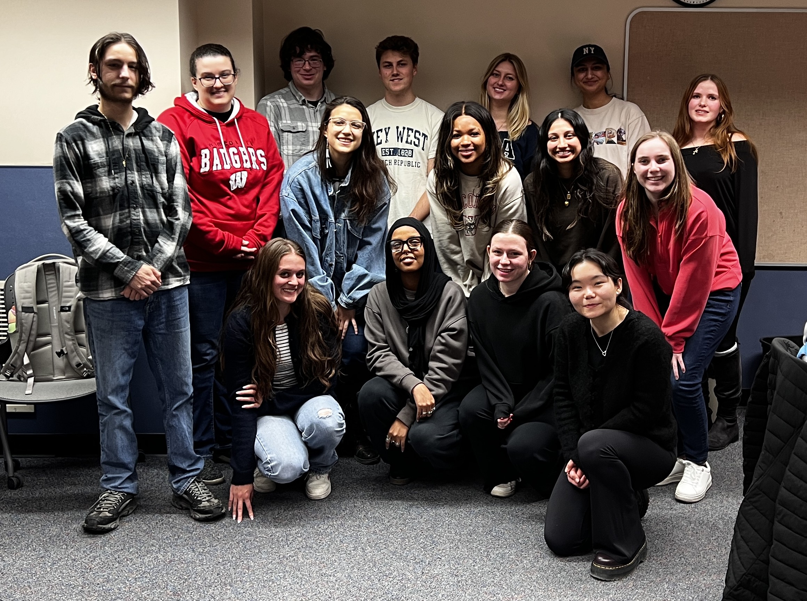

Welcome to the Project!
Shekoli! And welcome to the Tribal Court of Appeals Project. This Project is an educational framework to accomplish the following:
- Serve Tribal Nations by creating a tribally owned database of Tribal Court opinion summaries.
- Provide law students with legal training in Tribal Law.
- Give undergraduate students and volunteers pre-law experience in Tribal Law.
The Project partners with Tribal Nation Judiciaries to provide an opportunity for undergraduate students to gain legal experience in exchange for the Tribal Nations receiving a database of opinion summaries that can be used for publishing court reporters. Undergraduate students (and volunteers) summarize Tribal Court opinions into 32+ data points, and law students help review the casework to provide feedback for the undergraduate students.
The Process.
The Project works with colleges and universities to provide their undergraduate students with a formal course to engage in the Project. The Project also accepts volunteers to engage in the Project for service hours. The Project runs on a semester cycle, recurring every Fall, Spring, and Summer. The Project is facilitated by an Attorney-Instructor, who manages relationships with the Tribal Nation judiciaries, and provides training for the undergraduate and law students.
For undergraduate students, they begin with an Introduction to legal analysis, to the Tribal Partners, and to the Project. Before any case work, the students must complete a waiver with the Tribal Nation partner to guarantee that all research product and data is owned by the Tribe. Once students have completed the introductory materials and waiver, they begin casework: summarizing court opinions into the research database. Throughout the semester, students meet weekly one-on-one with the Attorney-Instructor to check-in, address class administration, and review case work. Additionally, students attend weekly lectures which include guest lectures from legal professionals, lessons on Tribal ways of knowing and class discussions on student case briefs. To close the semester, students are provided an opportunity to reflect on their learning and to stay in contact with their classmates and the Project. For assessment, students keep track of their hours for the semester and are graded depending on the number of hours completed.
For law students, they work with the Attorney-Instructor to help develop legal training materials for the Project and train the undergraduate students. Throughout the semester, the law students meet one-on-one with the undergraduates weekly, facilitate weekly student discussion groups, provide feedback on undergraduate case summaries, and provide regular progress updates to the Attorney-Instructor. Additionally, the law students work with the Attorney-Instructor to address larger course concerns: developing materials on legal training and Tribal Nations, providing critical course feedback to the Attorney-Instructor, brainstorming improvements to the Project, implementing new materials for course instruction, and managing relationships with Tribal Nation partners. Together, the Attorney-Instructor, the law students, and the undergraduate students utilize the Project’s framework to serve Tribal Nations by creating a database of court case summaries.
The History.
The Project’s foundation began in Fall 2022. Then law student, Michael Williams, began interning with the Oneida Nation Judiciary to summarize their Court of Appeals opinions. In this first year, Williams developed a database framework for their opinions and entered 80+ cases into the database. Having experienced many pre-law training programs, Williams saw an opportunity to train pre-law undergraduates with this casework data collection. Using the database, Williams developed the class materials for the Tribal Court of Appeals Project as an opportunity for undergraduates to engage in pre-law experience through completing this casework.
With support from Professor Erin McBride, Professor Amanda White Eagle, and Attorney Dan Cornelius, Williams pitched the Project to the University of Wisconsin – Madison, Center for Law, Society and Justice. And in Fall 2023, Director Alexandra Huneeus and Program Administrator Martine Delannay approved a pilot class of the Project with 5 students enrolling in Legal Studies 699: Directed Study.
In the first semester (Fall 2023), 5 students logged 360 hours for the Project and summarized 86 opinions. In the second semester (Spring 2024), 5 students logged 360 hours and summarized 73 opinions.
After a year of the Project, the Center for Law, Society and Justice offered Williams a contract to lecture for Legal Studies 400: Tribal Court of Appeals Project. With the new course name, the Project added an application process and increased to 15 students per semester. In the third semester of the Project (Fall 2024), 15 students logged 1,244 hours and summarized 130 opinions. And in the fourth semester (Spring 2025), 15 students logged 1,394 hours and summarized 231 opinions.
The Co-Researchers.
As part of the Project’s curriculum, students and volunteers are introduced to the concept of participating as co-researchers — recognizing their roles as active contributors to knowledge creation rather than passive learners. Drawing on Erynne Gilpin’s (2020) definition in Land as Body, the Project recognizes participants not simply as students or data collectors, but as co-researchers whose lived experiences and community responsibilities are integral to the research process. This designation affirms each participant's personal soveriengty, intellectual contribution, and relational accountability within the Project's broader aim of supporting Tribal sovereignty through legal data.
Additionally, students participate in self-location as a practice of relationality and transparency. Each co-researcher is invited to reflect on their own place in relation to the lands, communities, and legal traditions engaged in this work. This practice grounds the Project in Indigenous research ethics by acknowledging that knowledge production is never neutral. The Project includes a dedicated space for co-researchers to share their own self-locations, fostering a deeper understanding of how each individual’s journey shapes their approach to Indigenous legal research and education.
Gilpin, Erynne M. Land as Body: Indigenous Womxn’s Leadership, Land-Based Wellness and Embodied Governance*. 2020. University of Victoria, PhD dissertation.
View Self-LocationsBelow are pictures of each class of students who have worked on the Project.
University of Wisconsin Madison – Legal Studies 400 + 699 – Spring 2025
From left to right: Back Row: Jakob Mills, Ethan Ladd, Lauren Noble, Sara Hegde, Zoe Armbruster; Middle Row: Christopher Rajchel, Ciarra Hardke (law student), Wrigley Bastian, Ashley Green, Abhita Chakravarti, Alexandra Amato; Front Row: Helena Bello, Nasra Hassen, Lauren Jentsch, Tenyang Tsarong. Not pictured: Amaya White.
University of Wisconsin Madison – Legal Studies 400 + 699 – Fall 2024

From left to right: Back Row: Cayden Yandell, Ethan Ladd, Cal Schnieder. Jonah Schmidtke; Middle Row: Alexandra Amato, Laila Kirstein, Hanna Skenandore, Carol Gross, Leila Schiegg, Maggie Munson, Amaya White. Not pictured: Eleanor Buono, Camryn Cohen, Ella Bufallo, Miinan White, Ciarra Hardke (law student).
University of Wisconsin Madison – Legal Studies 699 – Spring 2024

From left to right: Samuel White, Diana Bonilla, Miinan White, Hanna Skenandore, Jack Brady.
University of Wisconsin Madison – Legal Studies 699 – Fall 2023
From left to right: Ella Bufallo, Kira Adkins, Michael Williams (law student), Silas Cleveland, Diana Bonilla. Not pictured: Mathilde Hardy
The Partners.
The Project has partnered with the following Tribal Nations to summarize their opinions. We are continually seeking to expand our partnerships with Tribal Nations.
Oneida Nation Judiciary
Website: https://oneida-nsn.gov/
Judiciary: https://oneida-nsn.gov/judiciary/
Stockbridge-Munsee Community Band of Mohican Indians Judiciary
Website: https://mohican.com/
The Framework.
This project is unique because it provides both a free service and a framework to complete that service.
The service is summarizing court opinions for Tribal Nations. As developing sovereigns, it is important for Tribal Nations to have this legal data on their court opinions in order to maintain and support their growth. The Project provides this service to help support the continued growth of Tribal sovereignty.
The Project also offers a framework for summarizing court opinions for Tribal Nations. A framework is “a basic structure underlying a system.” This Project offers a basic structure for a system to summarize case opinions for tribal courts. The Project itself is a series of educational resources for this case summarizing system to function. The framework includes the key players, and the educational resources.
There are four key players in the framework of the Project: the Tribal Nation partner, the Attorney-Instructor, the law student and the undergraduate. As covered in “The Process” section, each of these key players provides a vital requirement for this project to function. The educational resources are all the documents, diagrams, videos, databases, and other materials developed by this Project to provide this service to Tribal Nations. These educational resources provide the context and tools for the players to facilitate the Project. And these educational resources are available to others who want to facilitate a similar service.
Which brings up the most important part about this framework: this Project is replicable. With the four key players and the educational resources, this Project can be replicated in many different Tribal communities. More importantly, the framework can be customized and adapted for the community where the work is happening.
If you are an attorney interested in facilitating this Project for your community, please reach out via our Contact Form.
Join Us!
Are you interested in volunteering for the Project? Apply for the Project here:
Undergraduates/Volunteers: Interest Form
Law Students: Interest Form